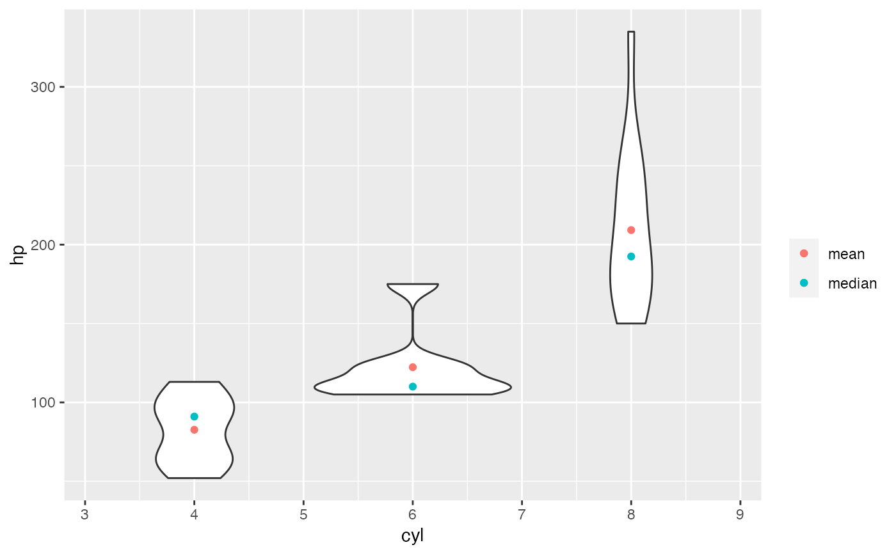
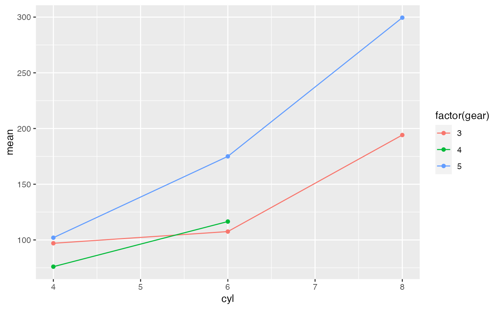

Creates a data frame of statistics calculated on one or more response variables, possibly for each group formed by combinations of additional variables. The resulting data frame has one column for each of the statistics requested as well as columns for any grouping variables and a column identifying the response variable for which the statistics was calculated.
A formula indicating which variables are to be used.
Semantics are approximately as in lm() since stats::model.frame()
is used to turn the formula into a data frame. But first conditions and groups
are re-expressed into a form that stats::model.frame() can interpret.
Multiple response variables can be separated by + on the left hand side of
the formula. A one-sided formula ~ rhs | cond is treated as rhs ~ 1 | cond.
See details.
A data frame or list containing the variables.
Functions used to compute the statistics. If this is empty,
a default set of summary statistics is used. Functions used must accept
a vector of values and return either a (possibly named) single value,
a (possibly named) vector of values, or a data frame with one row.
Functions can be specified with character strings, names, or expressions
that look like function calls with the first argument missing. The latter
option provides a convenient way to specify additional arguments. See the
examples.
Note: If these arguments are named, those names will be used in the data
frame returned (see details). Such names may not be among the names of the named
arguments of df_stats().
If a function is specified using ::, be sure to include the trailing
parens, even if there are no additional arguments required.
A logical indicating whether combinations of the grouping
variables that do not occur in data should be dropped from the
result.
Arguments passed to the functions in ....
A character string to separate components of names. Set to "" if
you don't want separation.
One of "long" or "wide" indicating the desired shape of the
returned data frame.
An expression or formula to be evaluated in data and defining (additional) groups.
This isn't necessary, since these can be placed into the formula, but it is provided
for similarity to other functions from the mosaic package.
A logical indicating whether the default names should include the name of the variable being summarized as well as the summarizing function name in the default case when names are not derived from the names of the returned object or an argument name.
A logical indicating whether make.names() should be
used to force names of the returned data frame to by syntactically valid.
A function (or character string naming a function) that determines how NAs are treated.
Options include "na.warn" which removes missing data and emits a warning,
"na.pass" which includes all of the data,
"na.omit" or "na.exclude" which silently discard missing data,
and "na.fail" which fails if there is missing data.
See link[stats]{na.pass}() and na.warn() for details.
The default is "na.warn" unless no function are specified in ..., in which case
"na.pass" is used since the default function reports the number of missing values.
A data frame. Names of columns in the resulting data frame consist of three
parts separated by sep.
The first part is the argument name, if it exists, else the function.
The second part is the name of the variable being summarised if long_names == TRUE and
the first part is the function name, else ""
The third part is the names of the object returned by the summarizing function, if they
exist, else a sequence of consecutive integers or "" if there is only one component
returned by the summarizing function.
See the examples.
Use a one-sided formula to compute summary statistics for the right hand side
expression over the entire data.
Use a two-sided formula to compute summary statistics for the left hand (response)
expression(s) for each combination of levels of the expressions occurring on the
right hand side.
This is most useful when the left hand side is quantitative and each expression
on the right hand side has relatively few unique values. A function like
mosaic::ntiles() is often useful to create a few groups of roughly equal size
determined by ranges of a quantitative variable. See the examples.
Note that unlike dplyr::summarise(), df_stats() ignores
any grouping defined in data if data is a grouped tibble.
The use of | to define groups is tricky because (a) stats::model.frame()
doesn't handle this sort of thing and (b) | is also used for logical or. The
current algorithm for handling this will turn the first occurrence of | into an attempt
to condition, so logical or cannot be used before conditioning in the formula.
If you have need of logical or, we suggest creating a new variable that contains the
results of evaluating the expression.
Similarly, addition (+) is used to separate grouping variables, not for
arithmetic.
df_stats( ~ hp, data = mtcars)
#> response min Q1 median Q3 max mean sd n missing
#> 1 hp 52 96.5 123 180 335 146.6875 68.56287 32 0
# There are several ways to specify functions
df_stats( ~ hp, data = mtcars, mean, trimmed_mean = mean(trim = 0.1), "median",
range, Q = quantile(c(0.25, 0.75)))
#> response mean trimmed_mean median range_1 range_2 Q_25% Q_75%
#> 1 hp 146.6875 141.1923 123 52 335 96.5 180
# When using ::, be sure to include parens, even if there are no additional arguments.
df_stats( ~ hp, data = mtcars, mean = base::mean(), trimmed_mean = base::mean(trim = 0.1))
#> response mean trimmed_mean
#> 1 hp 146.6875 141.1923
# force names to by syntactically valid
df_stats( ~ hp, data = mtcars, Q = quantile(c(0.25, 0.75)), nice_names = TRUE)
#> response Q_25. Q_75.
#> 1 hp 96.5 180
# longer names
df_stats( ~ hp, data = mtcars, mean, trimmed_mean = mean(trim = 0.1), "median", range,
long_names = TRUE)
#> response mean_hp trimmed_mean median_hp range_hp_1 range_hp_2
#> 1 hp 146.6875 141.1923 123 52 335
# wide vs long format
df_stats( hp ~ cyl, data = mtcars, mean, median, range)
#> response cyl mean median range_1 range_2
#> 1 hp 4 82.63636 91.0 52 113
#> 2 hp 6 122.28571 110.0 105 175
#> 3 hp 8 209.21429 192.5 150 335
df_stats( hp + wt + mpg ~ cyl, data = mtcars, mean, median, range)
#> response cyl mean median range_1 range_2
#> 1 hp 4 82.636364 91.000 52.000 113.000
#> 2 hp 6 122.285714 110.000 105.000 175.000
#> 3 hp 8 209.214286 192.500 150.000 335.000
#> 4 wt 4 2.285727 2.200 1.513 3.190
#> 5 wt 6 3.117143 3.215 2.620 3.460
#> 6 wt 8 3.999214 3.755 3.170 5.424
#> 7 mpg 4 26.663636 26.000 21.400 33.900
#> 8 mpg 6 19.742857 19.700 17.800 21.400
#> 9 mpg 8 15.100000 15.200 10.400 19.200
df_stats( hp ~ cyl, data = mtcars, mean, median, range, format = "long")
#> # A tibble: 12 × 4
#> response cyl stat value
#> <chr> <dbl> <chr> <dbl>
#> 1 hp 4 mean 82.6
#> 2 hp 4 median 91
#> 3 hp 4 range_1 52
#> 4 hp 4 range_2 113
#> 5 hp 6 mean 122.
#> 6 hp 6 median 110
#> 7 hp 6 range_1 105
#> 8 hp 6 range_2 175
#> 9 hp 8 mean 209.
#> 10 hp 8 median 192.
#> 11 hp 8 range_1 150
#> 12 hp 8 range_2 335
# More than one grouping variable -- 4 ways.
df_stats( hp ~ cyl + gear, data = mtcars, mean, median, range)
#> response cyl gear mean median range_1 range_2
#> 1 hp 4 3 97.0000 97.0 97 97
#> 2 hp 6 3 107.5000 107.5 105 110
#> 3 hp 8 3 194.1667 180.0 150 245
#> 4 hp 4 4 76.0000 66.0 52 109
#> 5 hp 6 4 116.5000 116.5 110 123
#> 6 hp 4 5 102.0000 102.0 91 113
#> 7 hp 6 5 175.0000 175.0 175 175
#> 8 hp 8 5 299.5000 299.5 264 335
df_stats( hp ~ cyl | gear, data = mtcars, mean, median, range)
#> response cyl gear mean median range_1 range_2
#> 1 hp 4 3 97.0000 97.0 97 97
#> 2 hp 6 3 107.5000 107.5 105 110
#> 3 hp 8 3 194.1667 180.0 150 245
#> 4 hp 4 4 76.0000 66.0 52 109
#> 5 hp 6 4 116.5000 116.5 110 123
#> 6 hp 4 5 102.0000 102.0 91 113
#> 7 hp 6 5 175.0000 175.0 175 175
#> 8 hp 8 5 299.5000 299.5 264 335
df_stats( hp ~ cyl, groups = ~gear, data = mtcars, mean, median, range)
#> response cyl gear mean median range_1 range_2
#> 1 hp 4 3 97.0000 97.0 97 97
#> 2 hp 6 3 107.5000 107.5 105 110
#> 3 hp 8 3 194.1667 180.0 150 245
#> 4 hp 4 4 76.0000 66.0 52 109
#> 5 hp 6 4 116.5000 116.5 110 123
#> 6 hp 4 5 102.0000 102.0 91 113
#> 7 hp 6 5 175.0000 175.0 175 175
#> 8 hp 8 5 299.5000 299.5 264 335
df_stats( hp ~ cyl, groups = gear, data = mtcars, mean, median, range)
#> response cyl gear mean median range_1 range_2
#> 1 hp 4 3 97.0000 97.0 97 97
#> 2 hp 6 3 107.5000 107.5 105 110
#> 3 hp 8 3 194.1667 180.0 150 245
#> 4 hp 4 4 76.0000 66.0 52 109
#> 5 hp 6 4 116.5000 116.5 110 123
#> 6 hp 4 5 102.0000 102.0 91 113
#> 7 hp 6 5 175.0000 175.0 175 175
#> 8 hp 8 5 299.5000 299.5 264 335
# because the result is a data frame, df_stats() is also useful for creating plots
if(require(ggformula)) {
gf_violin(hp ~ cyl, data = mtcars, group = ~ cyl) |>
gf_point(mean ~ cyl, data = df_stats(hp ~ cyl, data = mtcars, mean),
color = ~ "mean") |>
gf_point(median ~ cyl, data = df_stats(hp ~ cyl, data = mtcars, median),
color = ~"median") |>
gf_labs(color = "")
}
#> Loading required package: ggformula
#> Loading required package: ggplot2
#> Loading required package: scales
#> Loading required package: ggridges
#>
#> New to ggformula? Try the tutorials:
#> learnr::run_tutorial("introduction", package = "ggformula")
#> learnr::run_tutorial("refining", package = "ggformula")

# magrittr style piping is also supported
if (require(ggformula)) {
mtcars |>
df_stats(hp ~ cyl, mean, median, range)
mtcars |>
df_stats(hp ~ cyl + gear, mean, median, range) |>
gf_point(mean ~ cyl, color = ~ factor(gear)) |>
gf_line(mean ~ cyl, color = ~ factor(gear))
}

# can be used with a categorical response, too
if (require(mosaic)) {
df_stats(sex ~ substance, data = HELPrct, table, prop_female = prop)
}
#> Loading required package: mosaic
#> Registered S3 method overwritten by 'mosaic':
#> method from
#> fortify.SpatialPolygonsDataFrame ggplot2
#>
#> The 'mosaic' package masks several functions from core packages in order to add
#> additional features. The original behavior of these functions should not be affected by this.
#>
#> Attaching package: ‘mosaic’
#> The following objects are masked from ‘package:dplyr’:
#>
#> count, do, tally
#> The following object is masked from ‘package:Matrix’:
#>
#> mean
#> The following object is masked from ‘package:scales’:
#>
#> rescale
#> The following object is masked from ‘package:ggplot2’:
#>
#> stat
#> The following objects are masked from ‘package:stats’:
#>
#> IQR, binom.test, cor, cor.test, cov, fivenum, median, prop.test,
#> quantile, sd, t.test, var
#> The following objects are masked from ‘package:base’:
#>
#> max, mean, min, prod, range, sample, sum
#> response substance female male prop_female_prop_female
#> 1 sex alcohol 36 141 0.2033898
#> 2 sex cocaine 41 111 0.2697368
#> 3 sex heroin 30 94 0.2419355
if (require(mosaic)) {
df_stats(sex ~ substance, data = HELPrct, table, props)
}
#> response substance female male prop_female prop_male
#> 1 sex alcohol 36 141 0.2033898 0.7966102
#> 2 sex cocaine 41 111 0.2697368 0.7302632
#> 3 sex heroin 30 94 0.2419355 0.7580645